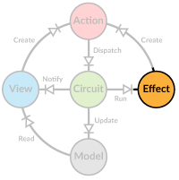

Async Effects
 Action handlers in Diode are pure functions, meaning they can just do computation based on the action and the current model. Side effects, such as making a request to the server, are not allowed. This restriction is mainly to make testing of handlers easier, when they behave in a predictable fashion.
So how do you then perform async requests in a Diode application? In Redux this is solved by placing the async calls into action creators, functions that
return actions. While this keeps action handlers pure, it makes the application design fragmented. In Diode we follow in the footsteps of Elm by wrapping any
side effects into Effects and returning them from the action handler with the updated model.
What is an Effect?
In an Effect we describe a computation instead of directly executing it. It's quite similar to the IO concept in Scalaz/Haskell but with a very
straightforward implementation:
type Effect[Action <: AnyRef] = () => Future[Action]
It's just a function returning a Future[Action]. The action returned by the Future is automatically dispatched. If your effect doesn't need anything
dispatched, return a None.
Using Effects
To create an effect you need a function that runs something asynchronously, for example performing an Ajax call.
import org.scalajs.dom.ext.Ajax
case class NewMessages(msgs: String)
def loadMessagesEffect(user: String) =
() => Ajax.get(s"/user/messages?id=$user").map(r => NewMessages(r.responseText))
Here the loadMessagesEffect doesn't actually execute the Ajax call immediately, but just provides a function to do so. Once the future does complete, the
result is mapped into a NewMessages action that gets automatically dispatched.
To return the effects alongside the new model, use one of the helper functions provided by ActionHandler.
case class Messages(msgs: String, loadTime: Int)
val messageHandler = new ActionHandler(zoomRW(_.messages)((m, v) => m.copy(messages = v))) {
override def handle = {
case LoadMessages(user) =>
updated(value.copy(loadTime = 0), loadMessagesEffect(user))
case NewMessages(msgs) =>
updated(Messages(msgs, -1))
}
}
If you have no state change, use effectOnly and if you want your effects to be run in parallel (normally they are run in serial), use updatedPar. For example
we might want to get periodic notifications (using runAfter) while the messages are being loaded, to update the UI accordingly.
case LoadMessages(user) =>
updatedPar(value.copy(loadTime = 0), loadMessagesEffect(user), runAfter(500.millis)(StillLoading))
case NewMessages(msgs) =>
updated(Messages(msgs, -1))
case StillLoading =>
if(value.loadTime != -1)
updated(value.copy(loadTime = value.loadTime + 500), runAfter(500.millis)(StillLoading))
else
noChange
Note how we need to update model when handling StillLoading because otherwise no views would be informed about the change.
For a more elaborate multi-state action management, take a look at PotActions